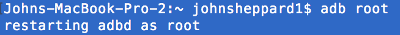

Android Environment Setup
Part 1 Android Mobile Devices
Android Forensics
By the end of this lab you should be able to get an emulated android device running and issue it with the 'adb devices' command. Follow the links below to get started.
Setup and run a Nexus 6P with Android Pie (API 28)
Boot the emulator
Connect to the device using ADB
Gather the Kernel logs and decode them
Gather the Application logs and decode thm
Setting up and Running the Emulator
At this point you should have Android Studio installed. Open Android Studio and in the bottom right select configure and then AVD Manager.

Choose phone as the category, and Nexus 6p as the device.
Under recommended, select and download Pie as the system image to use.

When the file has downloaded, launch the device.

You can leave the default settings as they are.

You should now see a device on screen like below.
Connecting to the device - ADB
Android Debug Bridge, ADB, is a command line tool that allows us to communicate with an Android device. With it we can "push" data to a device, 'pull' data from a device and open a shell on a device. It is a part of the SDK Tools.
You have already downloaded and installed the SDK Tools either in Santoku last week, or if you have downloaded Android Studio to your machine. The Santoku VM also has extra tools you can use for Android encryption, and that you may use for routing a physical device if you so choose in your assignment.
You can also download the platform tools as a standalone tool set to use on your primary machine if you so wish. It can be downlaoded from here.
Connecting over USB
You must enable USB debugging on a device to connect to it. USB debugging is found in the device system settings, under Developer options. On Android 4.2 and higher, the Developer options screen is hidden by default. To make it visible, go to Settings > About phone and tap Build number seven times. Return to the previous screen to find Developer options at the bottom. On some devices, the Developer options screen might be located or named differently.
Communicating with the Device
When you connect a device or start an emulator, it checks for an ADB server process. If it cannot find one, it will start one. This service will have a TCP port number assicated with it. Running the devices command from the terminal as seen below, will indicate the port number it is running on.
Here we can see one device attached on port 5554. This device is attached as an emulator as opposed to a physical device.
ADB Commands
Below is a list of ADB commands that you can use on your emulator. More information on these commands can be found at the Android Developers site and at ADB Shell. You should take time to familiarise yourself with these commands. The ADB help command can be found with
adb --helpADB Debugging
adb devices
adb forward
adb kill-server
Wireless
adb connect
adb usb
Package Manager
adb install
adb uninstall
adb shell pm list packages
adb shell pm path
adb shell pm clear
File Manager
adb pulladb push
adb shell ls
adb shell cd
adb shell rm
adb shell mkdir
adb shell touch
adb shell pwd
adb shell cp
adb shell mv
Network
adb shell netstat
adb shell ping
adb shell netcfg
adb shell ip
Logcat
adb logcat
adb shell dumpsys
adb shell dumpstate
Screenshot
adb shell screencap
adb shell screenrecord [4.4+]
System
adb root
adb sideload
adb shell ps
adb shell top
adb shell getprop
adb shell setprop
ADB and dmesg
'dmesg' is a linux command that stands for driver message. It's function is to dump the kernel logs to the screen or to a file from the buffer . The command may need you to acquire root access to the phone. To do this run

Next at the command prompt run the command
adb shell dmesgIt will return something similar to below. These can also be found at '/dev/kmsg'
head /dev/kmsgCan you make any sense of the dmsg output?
At the begining of each line is a number in square brackets, this is the kernel running time and will stop while the system is suspended. The timestamp is in the form of
[seconds . microseconds] <driver type > <method> <logged data>ADB and Logcat
Logcat will continuously dump a log of system messages, including stack traces when the device throws an error and messages. Running the command without the '-d' option at the end of the command will result in the command not stopping. You can also write the output to a file with '-f'. For more informatio check here.
adb shell logcat <options> <filters>
adb shell logcat --helpSome samples to try
adb shell logcat -b radio
adb shell logcat -d -v color
adb shell logcat -d *:WUnderstanding the output (based on the thread issuing the message)
<date> <invocation time> <pid> <tid> <priotiry level> <tag>Options
-b allows you to load specific a buffer or buffers. The buffers available are
radio: View the buffer that contains radio/telephony related messages.
events: View the interpreted binary system event buffer messages.
main: View the main log buffer (default) does not contain system and crash log messages.
system: View the system log buffer (default).
crash: View the crash log buffer (default).
all: View all buffers.
default: Reports main, system, and crash buffers.
-e , --regex= Only print lines where the log message matches where is a regular expression.
-c, --clear Clear (flush) the selected buffers and exit. The default buffer set is main, system and crash. To clear all of the buffers, use -b all -c.
-v Set the output format for log messages. The default is threadtime format. For a list of supported formats
-L, -last Dump the logs prior to the last reboot.
-S, --statistics Include statistics in the output to help you identify and target log spammers.
--pid= ... Only print logs from the given PID.
Priority Levels
V: Verbose (lowest priority)
D: Debug
I: Info
W: Warning
E: Error
F: Fatal
S: Silent (highest priority, on which nothing is ever printed)
Examples of tags include
ErrorProcessor:
DeviceStateChecker:
AudioRecord:
GnssLocationProvider:
Ouput Formats
color: Show each priority level with a different color for each priority level.
descriptive: Show log buffer event descriptions. This modifier affects event log buffer messages only, and has no effect on the other non-binary buffers. The event descriptions come from the event-log-tags database.
epoch: Display time in seconds starting from Jan 1, 1970.
monotonic: Display time in CPU seconds starting from the last boot.
printable: Ensure that any binary logging content is escaped.
uid: If permitted by access controls, display the UID or Android ID of the logged process.
usec: Display the time with precision down to microseconds.
UTC: Display time as UTC.
year: Add the year to the displayed time.
zone: Add the local time zone to the displayed time.
brief: Display priority, tag, and PID of the process issuing the message.
long: Display all metadata fields and separate messages with blank lines.
process: Display PID only.
raw: Display the raw log message with no other metadata fields.
tag: Display the priority and tag only.
thread: A legacy format that shows priority, PID, and TID of the thread issuing the message.
threadtime (default): Display the date, invocation time, priority, tag, PID, and TID of the thread issuing the message.
time: Display the date, invocation time, priority, tag, and PID of the process issuing the message.
dumpsys
dumpsys is a tool that runs on Android devices and provides information about system services. For more information check here.
adb shell dumpsysThe output can be very long so needs to be filtered to make sense of it. In this example the output is 63725 lines in length.
adb shell dumpsys | wc -l
63725In order to find the system services you can look at type the following
adb shell dumpsys -lSome example of what are returened inlcude 'account' and 'location'. Try typing
adb shell dumpsys location
adb shell dumpsys accountCommon Situations
Incompatible server version eg 39 and 40 - kill the server and reconnect to the device
adb kill-server
adb devicesInsufficient priviliges - run the command
adb root